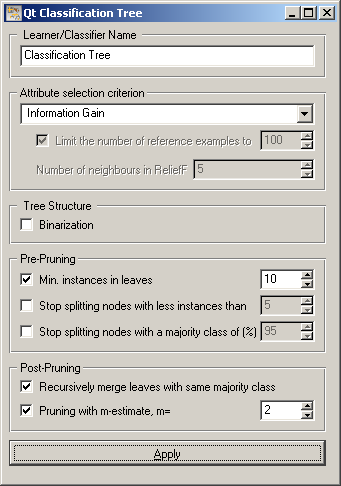
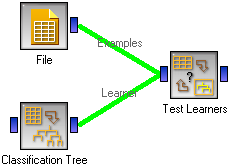

This is documentation for Orange 2.7. For the latest documentation, see Orange 3.
Classification Tree Learner¶
Classification Tree Learner
Signals¶
Inputs:
- Examples (ExampleTable)
A table with training examples
Outputs:
- Learner
The classification tree learning algorithm with settings as specified in the dialog.
- Classification Tree
Trained classifier (a subtype of Classifier)
Signal Classification Tree sends data only if the learning data (signal Classified Examples) is present.
Description¶
This widget provides a graphical interface to the classification tree learning algorithm.
As all widgets for classification, this widget provides a learner and classifier on the output. Learner is a learning algorithm with settings as specified by the user. It can be fed into widgets for testing learners, for instance Test Learners. Classifier is a Classification Tree Classifier (a subtype of a general classifier), built from the training examples on the input. If examples are not given, there is no classifier on the output.
Learner can be given a name under which it will appear in, say, Test Learners. The default name is “Classification Tree”.
The first block of options deals with the Attribute selection criterion, where you can choose between the information gain, gain ratio, gini index and ReliefF. For the latter, it is possible to Limit the number of reference examples (more examples give more accuracy and less speed) and the Number of neighbours considered in the estimation.
If Binarization is checked, the values of multivalued attributes are split into two groups (based on the statistics in the particular node) to yield a binary tree. Binarization gets rid of the usual measures’ bias towards attributes with more values and is generally recommended.
Pruning during induction can be based on the Minimal number of instance in leaves; if checked, the algorithm will never construct a split which would put less than the specified number of training examples into any of the branches. You can also forbid the algorithm to split the nodes with less than the given number of instances (Stop splitting nodes with less instances than)or the nodes with a large enough majority class (Stop splitting nodes with a majority class of (%).
During induction, the algorithm can produce a tree in which entire subtrees predict the same class, but with different probabilities. This can increase probability based measures of classifier quality, like the Brier score or AUC, but the trees tend to be much larger and more difficult to grasp. To avoid it, tell it to Recursively merge the leaves with same majority class. The widget also supports pruning with m-estimate.
After changing one or more settings, you need to push Apply, which will put the new learner on the output and, if the training examples are given, construct a new classifier and output it as well.
The tree can deal with missing data. Orange’s tree learner actually supports quite a few methods for that, but when used from canvas, it effectively splits the example into multiple examples with different weights. If you had data with 25% males and 75% females, then when the gender is unknown, the examples splits into two, a male and a female with weights .25 and .75, respectively. This goes for both learning and classification.
Examples¶
There are two typical uses of this widget. First, you may want to induce the model and check what it looks like. You do it with the schema below; to learn more about it, see the documentation on Classification Tree Graph

The second schema checks the accuracy of the algorithm.
